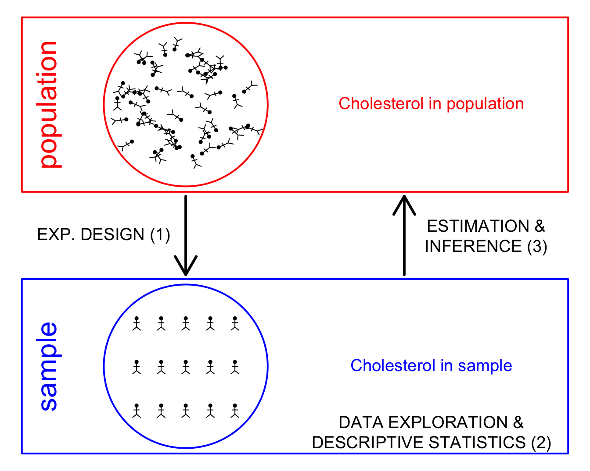

Course Description
This intermediate level course is one of our Foundations courses. It
covers essential statistical concepts and methods for extracting
insights from empirical data in the life sciences. The course positions
applied statistics, starting from important aspects of experimental
design and data exploration. We then move into statistical modeling and
data analysis. We will focus on the link between linear regression and
analysis of variance. Together, these methods contribute to the study of
General Linear Models. The course also introduces the basics of
non-parametric testing, and addresses categorical data analysis and
logistic regression.
The concepts and methods are exclusively introduced via case-studies
in the life sciences. For every study we elaborate on a concrete
research question and then provide a study design, which is followed by
data exploration. Next, we will focus on how to model the data and
elaborate on the link between model parameters and the subject matter
research question.
Learning objectives
The case studies will enable the participants to build
self-confidence in understanding, reading and communicating on data and
data analysis selecting appropriate statistical methods and software
tools for analysing different types of data interpreting the result of a
statistical data analysis in terms of subject matter research questions
and reporting them appropriately.
There is a strong emphasis in reproducible research by extensively
using R/Rmarkdown scripts. This approach will enable the participants to
weave statistical analyses, code, results and interpretation in webpages
and PDF documents so that their entire data analysis workflow is
transparent and reproducible. The course materials are designed in
R/Rmarkdown, kickstarting the course participants into developing their
own scripts.
Software
The learning materials are developed for R version 4.4.0 or later. We also
recommend to also install the latest version of RStudio.
To install all requirements, please copy and paste this lines of
code in your R console:
source("https://raw.githubusercontent.com/statOmics/PSLS/master/install.R")
LS0tCnRpdGxlOiAiUFNMUzI0IC0gUHJhY3RpY2FsIFN0YXRpc3RpY3MgZm9yIHRoZSBMaWZlIFNjaWVuY2VzIDIwMjQiCm91dHB1dDoKICBodG1sX2RvY3VtZW50OgogICAgbnVtYmVyX3NlY3Rpb25zOiBmYWxzZQotLS0KCmBgYHtyIHNldHVwLCBpbmNsdWRlPUZBTFNFLCBjYWNoZT1GQUxTRX0Ka25pdHI6Om9wdHNfY2h1bmskc2V0KGVjaG8gPSBGQUxTRSkKYGBgCgoqKioKCmBgYHtyIG91dC53aWR0aD0nODAlJyxmaWcuYXNwPS44LCBmaWcuYWxpZ249J2NlbnRlcicsZWNobz1GQUxTRX0KaWYgKCJwaSIgJWluJSBscygpKSBybSgicGkiKQprb3B2b2V0ZXIgPC0gZnVuY3Rpb24oeCwgeSwgYW5nbGUgPSAwLCBsID0gLjIsIGNleC5kb3QgPSAuNSwgcGNoID0gMTksIGNvbCA9ICJibGFjayIpIHsKICBhbmdsZSA8LSBhbmdsZSAvIDE4MCAqIHBpCiAgcG9pbnRzKHgsIHksIGNleCA9IGNleC5kb3QsIHBjaCA9IHBjaCwgY29sID0gY29sKQogIGxpbmVzKGMoeCwgeCArIGwgKiBjb3MoLXBpIC8gMiArIGFuZ2xlKSksIGMoeSwgeSArIGwgKiBzaW4oLXBpIC8gMiArIGFuZ2xlKSksIGNvbCA9IGNvbCkKICBsaW5lcyhjKHggKyBsIC8gMiAqIGNvcygtcGkgLyAyICsgYW5nbGUpLCB4ICsgbCAvIDIgKiBjb3MoLXBpIC8gMiArIGFuZ2xlKSArIGwgLyA0ICogY29zKGFuZ2xlKSksIGMoeSArIGwgLyAyICogc2luKC1waSAvIDIgKyBhbmdsZSksIHkgKyBsIC8gMiAqIHNpbigtcGkgLyAyICsgYW5nbGUpICsgbCAvIDQgKiBzaW4oYW5nbGUpKSwgY29sID0gY29sKQogIGxpbmVzKGMoeCArIGwgLyAyICogY29zKC1waSAvIDIgKyBhbmdsZSksIHggKyBsIC8gMiAqIGNvcygtcGkgLyAyICsgYW5nbGUpICsgbCAvIDQgKiBjb3MocGkgKyBhbmdsZSkpLCBjKHkgKyBsIC8gMiAqIHNpbigtcGkgLyAyICsgYW5nbGUpLCB5ICsgbCAvIDIgKiBzaW4oLXBpIC8gMiArIGFuZ2xlKSArIGwgLyA0ICogc2luKHBpICsgYW5nbGUpKSwgY29sID0gY29sKQogIGxpbmVzKGMoeCArIGwgKiBjb3MoLXBpIC8gMiArIGFuZ2xlKSwgeCArIGwgKiBjb3MoLXBpIC8gMiArIGFuZ2xlKSArIGwgLyAyICogY29zKC1waSAvIDIgKyBwaSAvIDQgKyBhbmdsZSkpLCBjKHkgKyBsICogc2luKC1waSAvIDIgKyBhbmdsZSksIHkgKyBsICogc2luKC1waSAvIDIgKyBhbmdsZSkgKyBsIC8gMiAqIHNpbigtcGkgLyAyICsgcGkgLyA0ICsgYW5nbGUpKSwgY29sID0gY29sKQogIGxpbmVzKGMoeCArIGwgKiBjb3MoLXBpIC8gMiArIGFuZ2xlKSwgeCArIGwgKiBjb3MoLXBpIC8gMiArIGFuZ2xlKSArIGwgLyAyICogY29zKC1waSAvIDIgLSBwaSAvIDQgKyBhbmdsZSkpLCBjKHkgKyBsICogc2luKC1waSAvIDIgKyBhbmdsZSksIHkgKyBsICogc2luKC1waSAvIDIgKyBhbmdsZSkgKyBsIC8gMiAqIHNpbigtcGkgLyAyIC0gcGkgLyA0ICsgYW5nbGUpKSwgY29sID0gY29sKQp9CgpwYXIobWFyID0gYygwLCAwLCAwLCAwKSwgbWFpID0gYygwLCAwLCAwLCAwKSkKcGxvdCgwLCAwLCB4bGFiID0gIiIsIHlsYWIgPSAiIiwgeGxpbSA9IGMoMCwgMTApLCB5bGltID0gYygwLCAxMCksIGNvbCA9IDAsIHhheHQgPSAibm9uZSIsIHlheHQgPSAibm9uZSIsIGF4ZXMgPSBGQUxTRSkKcmVjdCgwLCA2LCAxMCwgMTAsIGJvcmRlciA9ICJyZWQiLCBsd2QgPSAyKQp0ZXh0KC41LCA4LCAicG9wdWxhdGlvbiIsIHNydCA9IDkwLCBjb2wgPSAicmVkIiwgY2V4ID0gMikKc3ltYm9scygzLCA4LCBjaXJjbGVzID0gMS41LCBjb2wgPSAicmVkIiwgYWRkID0gVFJVRSwgZmcgPSAicmVkIiwgaW5jaGVzID0gRkFMU0UsIGx3ZCA9IDIpCnNldC5zZWVkKDMzMCkKZ3JpZCA8LSBzZXEoMCwgMS4zLCAuMDEpCgpmb3IgKGkgaW4gMTo1MCkKewogIGFuZ2xlMSA8LSBydW5pZihuID0gMSwgbWluID0gMCwgbWF4ID0gMzYwKQogIGFuZ2xlMiA8LSBydW5pZihuID0gMSwgbWluID0gMCwgbWF4ID0gMzYwKQogIHJhZGl1cyA8LSBzYW1wbGUoZ3JpZCwgcHJvYiA9IGdyaWReMiAqIHBpIC8gc3VtKGdyaWReMiAqIHBpKSwgc2l6ZSA9IDEpCiAga29wdm9ldGVyKDMgKyByYWRpdXMgKiBjb3MoYW5nbGUxIC8gMTgwICogcGkpLCA4ICsgcmFkaXVzICogc2luKGFuZ2xlMSAvIDE4MCAqIHBpKSwgYW5nbGUgPSBhbmdsZTIpCn0KdGV4dCg3LjUsIDgsICJDaG9sZXN0ZXJvbCBpbiBwb3B1bGF0aW9uIiwgY29sID0gInJlZCIsIGNleCA9IDEuMikKCnJlY3QoMCwgMCwgMTAsIDQsIGJvcmRlciA9ICJibHVlIiwgbHdkID0gMikKdGV4dCguNSwgMiwgInNhbXBsZSIsIHNydCA9IDkwLCBjb2wgPSAiYmx1ZSIsIGNleCA9IDIpCnN5bWJvbHMoMywgMiwgY2lyY2xlcyA9IDEuNSwgY29sID0gInJlZCIsIGFkZCA9IFRSVUUsIGZnID0gImJsdWUiLCBpbmNoZXMgPSBGQUxTRSwgbHdkID0gMikKZm9yIChpIGluIDA6MikgewogIGZvciAoaiBpbiAwOjQpCiAgewogICAga29wdm9ldGVyKDIuMSArIGogKiAoMy45IC0gMi4xKSAvIDQsIDEuMSArIGkpCiAgfQp9CnRleHQoNy41LCAyLCAiQ2hvbGVzdGVyb2wgaW4gc2FtcGxlIiwgY29sID0gImJsdWUiLCBjZXggPSAxLjIpCgphcnJvd3MoMywgNS45LCAzLCA0LjEsIGNvbCA9ICJibGFjayIsIGx3ZCA9IDMpCmFycm93cyg3LCA0LjEsIDcsIDUuOSwgY29sID0gImJsYWNrIiwgbHdkID0gMykKdGV4dCgxLjUsIDUsICJFWFAuIERFU0lHTiAoMSkiLCBjb2wgPSAiYmxhY2siLCBjZXggPSAxLjIpCnRleHQoOC41LCA1LCAiRVNUSU1BVElPTiAmXG5JTkZFUkVOQ0UgKDMpIiwgY29sID0gImJsYWNrIiwgY2V4ID0gMS4yKQp0ZXh0KDcuNSwgLjUsICJEQVRBIEVYUExPUkFUSU9OICZcbkRFU0NSSVBUSVZFIFNUQVRJU1RJQ1MgKDIpIiwgY29sID0gImJsYWNrIiwgY2V4ID0gMS4yKQpgYGAKCiMjIENvdXJzZSBEZXNjcmlwdGlvbgoKVGhpcyBpbnRlcm1lZGlhdGUgbGV2ZWwgY291cnNlIGlzIG9uZSBvZiBvdXIgRm91bmRhdGlvbnMgY291cnNlcy4gSXQgY292ZXJzIGVzc2VudGlhbCBzdGF0aXN0aWNhbCBjb25jZXB0cyBhbmQgbWV0aG9kcyBmb3IgZXh0cmFjdGluZyBpbnNpZ2h0cyBmcm9tIGVtcGlyaWNhbCBkYXRhIGluIHRoZSBsaWZlIHNjaWVuY2VzLiBUaGUgY291cnNlIHBvc2l0aW9ucyBhcHBsaWVkIHN0YXRpc3RpY3MsIHN0YXJ0aW5nIGZyb20gaW1wb3J0YW50IGFzcGVjdHMgb2YgZXhwZXJpbWVudGFsIGRlc2lnbiBhbmQgZGF0YSBleHBsb3JhdGlvbi4gV2UgdGhlbiBtb3ZlIGludG8gc3RhdGlzdGljYWwgbW9kZWxpbmcgYW5kIGRhdGEgYW5hbHlzaXMuIFdlIHdpbGwgZm9jdXMgb24gdGhlIGxpbmsgYmV0d2VlbiBsaW5lYXIgcmVncmVzc2lvbiBhbmQgYW5hbHlzaXMgb2YgdmFyaWFuY2UuIFRvZ2V0aGVyLCB0aGVzZSBtZXRob2RzIGNvbnRyaWJ1dGUgdG8gdGhlIHN0dWR5IG9mIEdlbmVyYWwgTGluZWFyIE1vZGVscy4gVGhlIGNvdXJzZSBhbHNvIGludHJvZHVjZXMgdGhlIGJhc2ljcyBvZiBub24tcGFyYW1ldHJpYyB0ZXN0aW5nLCBhbmQgYWRkcmVzc2VzIGNhdGVnb3JpY2FsIGRhdGEgYW5hbHlzaXMgYW5kIGxvZ2lzdGljIHJlZ3Jlc3Npb24uCgpUaGUgY29uY2VwdHMgYW5kIG1ldGhvZHMgYXJlIGV4Y2x1c2l2ZWx5IGludHJvZHVjZWQgdmlhIGNhc2Utc3R1ZGllcyBpbiB0aGUgbGlmZSBzY2llbmNlcy4gRm9yIGV2ZXJ5IHN0dWR5IHdlIGVsYWJvcmF0ZSBvbiBhIGNvbmNyZXRlIHJlc2VhcmNoIHF1ZXN0aW9uIGFuZCB0aGVuIHByb3ZpZGUgYSBzdHVkeSBkZXNpZ24sIHdoaWNoIGlzIGZvbGxvd2VkIGJ5IGRhdGEgZXhwbG9yYXRpb24uIE5leHQsIHdlIHdpbGwgZm9jdXMgb24gaG93IHRvIG1vZGVsIHRoZSBkYXRhIGFuZCBlbGFib3JhdGUgb24gdGhlIGxpbmsgYmV0d2VlbiBtb2RlbCBwYXJhbWV0ZXJzIGFuZCB0aGUgc3ViamVjdCBtYXR0ZXIgcmVzZWFyY2ggcXVlc3Rpb24uCgotLS0KCiMjIExlYXJuaW5nIG9iamVjdGl2ZXMKClRoZSBjYXNlIHN0dWRpZXMgd2lsbCBlbmFibGUgdGhlIHBhcnRpY2lwYW50cyB0byBidWlsZCBzZWxmLWNvbmZpZGVuY2UgaW4KdW5kZXJzdGFuZGluZywgcmVhZGluZyBhbmQgY29tbXVuaWNhdGluZyBvbiBkYXRhIGFuZCBkYXRhIGFuYWx5c2lzCnNlbGVjdGluZyBhcHByb3ByaWF0ZSBzdGF0aXN0aWNhbCBtZXRob2RzIGFuZCBzb2Z0d2FyZSB0b29scyBmb3IgYW5hbHlzaW5nIGRpZmZlcmVudCB0eXBlcyBvZiBkYXRhCmludGVycHJldGluZyB0aGUgcmVzdWx0IG9mIGEgc3RhdGlzdGljYWwgZGF0YSBhbmFseXNpcyBpbiB0ZXJtcyBvZiBzdWJqZWN0IG1hdHRlciByZXNlYXJjaCBxdWVzdGlvbnMgYW5kIHJlcG9ydGluZyB0aGVtIGFwcHJvcHJpYXRlbHkuCgpUaGVyZSBpcyBhIHN0cm9uZyBlbXBoYXNpcyBpbiByZXByb2R1Y2libGUgcmVzZWFyY2ggYnkgZXh0ZW5zaXZlbHkgdXNpbmcgUi9SbWFya2Rvd24gc2NyaXB0cy4gVGhpcyBhcHByb2FjaCB3aWxsIGVuYWJsZSB0aGUgcGFydGljaXBhbnRzIHRvIHdlYXZlIHN0YXRpc3RpY2FsIGFuYWx5c2VzLCBjb2RlLCByZXN1bHRzIGFuZCBpbnRlcnByZXRhdGlvbiBpbiB3ZWJwYWdlcyBhbmQgUERGIGRvY3VtZW50cyBzbyB0aGF0IHRoZWlyIGVudGlyZSBkYXRhIGFuYWx5c2lzIHdvcmtmbG93IGlzIHRyYW5zcGFyZW50IGFuZCByZXByb2R1Y2libGUuIFRoZSBjb3Vyc2UgbWF0ZXJpYWxzIGFyZSBkZXNpZ25lZCBpbiBSL1JtYXJrZG93biwga2lja3N0YXJ0aW5nIHRoZSBjb3Vyc2UgcGFydGljaXBhbnRzIGludG8gZGV2ZWxvcGluZyB0aGVpciBvd24gc2NyaXB0cy4KCi0tLQoKIyMgU29mdHdhcmUKCi0gVGhlIGxlYXJuaW5nIG1hdGVyaWFscyBhcmUgZGV2ZWxvcGVkIGZvciBbUl0oaHR0cHM6Ly93d3cuci1wcm9qZWN0Lm9yZy8pIHZlcnNpb24gNC40LjAgb3IgbGF0ZXIuIFdlIGFsc28gcmVjb21tZW5kIHRvIGFsc28gaW5zdGFsbCB0aGUgbGF0ZXN0IHZlcnNpb24gb2YgW1JTdHVkaW9dKGh0dHBzOi8vd3d3LnJzdHVkaW8uY29tL3Byb2R1Y3RzL3JzdHVkaW8vZG93bmxvYWQvKS4KCi0gVG8gaW5zdGFsbCBhbGwgcmVxdWlyZW1lbnRzLCBwbGVhc2UgY29weSBhbmQgcGFzdGUgdGhpcyBsaW5lcyBvZiBjb2RlIGluIHlvdXIgUiBjb25zb2xlOgoKYGBgcgpzb3VyY2UoImh0dHBzOi8vcmF3LmdpdGh1YnVzZXJjb250ZW50LmNvbS9zdGF0T21pY3MvUFNMUy9tYXN0ZXIvaW5zdGFsbC5SIikKYGBgCgotIFRvIGdldCBmYW1pbGlhciB3aXRoIG1vc3QgaW1wb3J0YW50IGNvbmNlcHRzIGluIHdvcmtpbmcgd2l0aCBSIGFuZCBSbWFya2Rvd24sIHlvdSBtYXkgZG93bmxvYWQgdGhlIHJlc3BlY3RpdmUgY2hlYXQgc2hlZXRzOgoKICAgIC0gW0Jhc2UgUl0oaHR0cHM6Ly9pcXNzLmdpdGh1Yi5pby9kc3Mtd29ya3Nob3BzL1IvUmludHJvL2Jhc2Utci1jaGVhdC1zaGVldC5wZGYpCiAgICAtIFtSbWFya2Rvd25dKGh0dHBzOi8vd3d3LnJzdHVkaW8uY29tL3dwLWNvbnRlbnQvdXBsb2Fkcy8yMDE1LzAyL3JtYXJrZG93bi1jaGVhdHNoZWV0LnBkZikKICAgIC0gW090aGVyXShodHRwczovL3d3dy5yc3R1ZGlvLmNvbS9yZXNvdXJjZXMvY2hlYXRzaGVldHMvKQoKIyMgTGVhcm5pbmcgbWF0ZXJpYWxzCgoxLiBbSW50cm9kdWN0aW9uXSguLzAxLWludHJvLmh0bWwpCjIuIFtDb25jZXB0c10oLi8wMi1jb25jZXB0cy5odG1sKQozLiBbRXhwZXJpbWVudGFsIERlc2lnbl0oLi8wMy1leHBlcmltZW50YWxEZXNpZ24uaHRtbCkKCgo0LiBbRGF0YSBFeHBsb3JhdGlvbl0oLi8wNC1kYXRhRXhwbG9yYXRpb24uaHRtbCkKCiAgICAtIFtFeGVyY2lzZXNdKC4vMDRfZXhlcmNpc2VzLmh0bWwpCgo1LiBTdGF0aXN0aWNhbCBJbmZlcmVuY2UKCiAgICAtIFs1LjEuIFN0YXRpc3RpY2FsIEluZmVyZW5jZV0oLi8wNS1zdGF0aXN0aWNhbEluZmVyZW5jZS5odG1sKQogICAgLSBbNS4yLiBUd28gc2FtcGxlIHQtdGVzdF0oLi8wNS1zdGF0aXN0aWNhbEluZmVyZW5jZS10d29zYW1wbGVULmh0bWwpCiAgICAtIFtFeGVyY2lzZXNdKC4vMDVfZXhlcmNpc2VzLmh0bWwpCgo2LiBbTGluZWFyIFJlZ3Jlc3Npb25dKC4vMDYtbGluZWFyUmVncmVzc2lvbi5odG1sKQoKICAgIC0gW0V4ZXJjaXNlc10oLi8wNl9leGVyY2lzZXMuaHRtbCkKCjcuIFtBbmFseXNpcyBvZiBWYXJpYW5jZV0oLi8wNy1Bbm92YS5odG1sKQoKICAgIC0gW0V4ZXJjaXNlc10oLi8wN19leGVyY2lzZXMuaHRtbCkKCjguIE11bHRpcGxlIFJlZ3Jlc3Npb246CgogICAgLSBbTXVsdGlwbGUgUmVncmVzc2lvbl0oLi8wOC1NdWx0aXBsZVJlZ3Jlc3Npb24uaHRtbCkKICAgIC0gW0ZhY3RvcmlhbCBEZXNpZ25zXSguLzA4LU11bHRpcGxlUmVncmVzc2lvbi1TcGVjaWZpY0Rlc2lnbnMuaHRtbCkKICAgIC0gW0V4cGVyaW1lbnRhbCBEZXNpZ24gSUk6IEJsb2NraW5nXSguLzA4LWV4cGVyaW1lbnRhbERlc2lnbjIuaHRtbCkKICAgIC0gW0V4cGVyaW1lbnRhbCBEZXNpZ24gSUlJOiBQb3dlciBhbmQgUmVwbGljYXRpb25dKC4vMDgtZXhwZXJpbWVudGFsRGVzaWduMy5odG1sKQogICAgLSBbRXhlcmNpc2VzXSguLzA4X2V4ZXJjaXNlcy5odG1sKQoKOS4gTm9ucGFyYW1ldHJpYyBTdGF0aXN0aWNzOgoKICAgIC0gWzkuMSBOb25wYXJhbWV0cmljIFN0YXRpc3RpY3M6IFdpbGNveG9uLU1hbm4tV2hpdG5leSB0ZXN0XSguLzA5LU5vbnBhcmFtZXRlcmljU3RhdGlzdGljcy1XaWxjb3hvbk1hbm5XaXRobmV5Lmh0bWwpCiAgICAtIFs5LjIgTm9ucGFyYW1ldHJpYyBTdGF0aXN0aWNzOiBLcnVza2FsIFdhbGxpcyB0ZXN0XSguLzA5LU5vbnBhcmFtZXRlcmljU3RhdGlzdGljcy1LcnVza2FsV2FsbGlzLmh0bWwpCiAgICAtIFtFeGVyY2lzZXNdKC4vMDlfZXhlcmNpc2VzLmh0bWwpCgoxMC4gW0NhdGVnb3JpY2FsIERhdGEgQW5hbHlzaXNdKC4vMTAtY2F0ZWdvcmljYWxEYXRhQW5hbHlzaXMuaHRtbCkKCi0tLQoKIyMgSW5zdHJ1Y3RvcnMKCiAtIFtMaWV2ZW4gQ2xlbWVudF0oLi9pbnN0cnVjdG9ycy5odG1sI0xpZXZlbl9DbGVtZW50KQogLSBbTmVsZSBEZSBNZWVzdGVyXSgpCg==